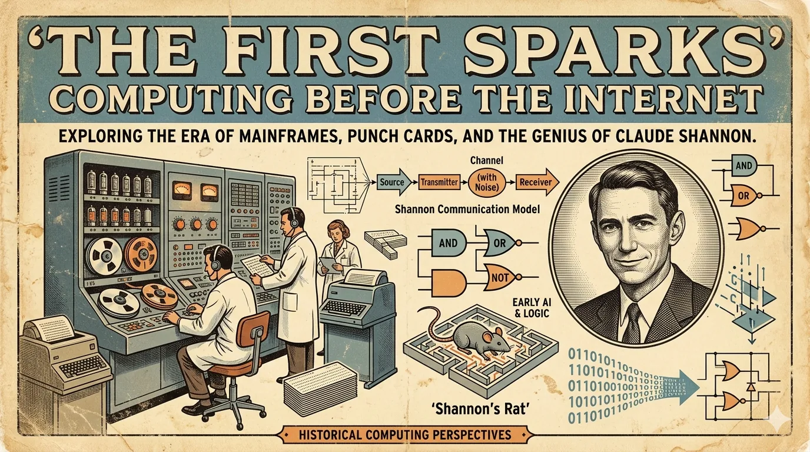

The First Sparks: Computing Before the Internet
Technology rarely arrives all at once. It appears in fragments. A relay clicking in a lab. A vacuum tube glowing in the dark. A programmer feeding punched cards into a machine that fills an entire room. The history of computing is the story of small breakthroughs that changed the direction of civilization.

Technology rarely arrives all at once. It appears in fragments. A relay clicking in a lab. A vacuum tube glowing in the dark. A programmer feeding punched cards into a machine that fills an entire room.
The history of computing is the story of small breakthroughs that changed the direction of civilization.
From Calculation to Computation
Long before laptops and cloud servers, engineers were trying to solve a simple problem: how do we calculate faster?
Mechanical Beginnings
Early machines were designed to reduce human effort.
- The abacus accelerated arithmetic.
- Mechanical calculators reduced manual errors.
- Programmable looms introduced the idea of instructions controlling machines.
- Punched cards became a medium for storing information.
Every great technological revolution begins by solving a small, practical problem.
Key Milestones
| Year | Innovation | Impact |
|---|---|---|
| 1801 | Jacquard Loom | Introduced programmable patterns |
| 1837 | Analytical Engine | Conceptual foundation of general-purpose computing |
| 1890 | Hollerith Tabulator | Automated census processing |
| 1946 | ENIAC | Large-scale electronic computation |
| 1971 | Microprocessor | Computing became personal |
The Age of Vacuum Tubes
Electronic computing started with machines that consumed enormous amounts of power.
Characteristics
- Room-sized hardware
- High heat generation
- Frequent component failures
- Limited memory
- Revolutionary performance for the time
A Different Scale
A modern smartphone performs billions of operations per second while fitting into a pocket.
Early computers needed dedicated operators, specialized cooling, and entire facilities.
miniaturization became one of the defining themes of technological progress.
Programming Emerges
Hardware alone was not enough.
The real breakthrough came when humans learned to communicate with machines through software.
Early Languages
| Language | Introduced | Purpose |
|---|---|---|
| Assembly | 1940s | Low-level machine control |
| FORTRAN | 1957 | Scientific computing |
| COBOL | 1959 | Business applications |
| C | 1972 | Systems programming |
Why C Changed Everything
C balanced performance with portability.
Many operating systems, compilers, and embedded platforms trace their roots to it.
#include <stdio.h>
int main(void) {
printf("Hello, World!\n");
for (int i = 0; i < 5; i++) {
printf("Iteration %d\n", i);
}
return 0;
}
Networks Connect the World
Computers became useful.
Networks made them transformative.
Before the Web
Researchers connected machines to share information across distances.
What started as academic experimentation evolved into global infrastructure.
The most important technologies do not replace people. They connect them.
Building Blocks
- Packet switching
- Routing protocols
- Distributed systems
- Error correction
- Standardized communication
Lessons From Early Computing
Technology advances in layers.
One generation builds the foundation. The next generation builds on top of it.
Patterns That Repeat
- Hardware becomes cheaper.
- Software becomes more capable.
- Networks become faster.
- Access becomes broader.
- New industries emerge.
A Final Thought
The pioneers of computing were not trying to build social networks, smartphones, or artificial intelligence.
They were trying to solve difficult problems with limited tools.
Their success reminds us of a timeless principle:
Great innovations often begin as humble experiments.